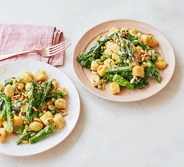

Creamy brokkoli gnocchi

Whip up this tasty vegetarian gnocchi in just 15 minutes. Broccoli, peas and pine nuts combine with crème fraîche and mustard for a tasty midweek meal
Ingredients
- 3 tbsp crème fraîche
- ½ tbsp Dijon mustard
- ½ lemon, zested and juiced
- 200g broccoli
- 350g fresh gnocchi
- 2 tbsp olive oil
- 100g frozen peas
- 1 tbsp toasted pine nuts
Steps
- Mix together the crème fraîche, mustard and lemon juice. Set aside. Bring a large pan of salted water to the boil. Once boiling, add the broccoli and cook for 3 mins, then tip in the gnocchi. Cook until the gnocchi begins to float to the surface, this will only take 1 min so keep an eye on them, then drain.
- Heat the oil in a large non-stick frying pan and, once hot, tip in the gnocchi, broccoli and frozen peas. Toss around in the hot oil for 1 min, then stir through the crème fraîche mixture. Season to taste. Once hot, spoon into bowls and top with the lemon zest and pine nuts.
Home